Ask me about Sergio’s projects, skills, or fit for your team. Try “Should I hire Sergio?”
Sergio Lopez
US Citizen
2yr to graduate
computer science engineering math minor

Projects
AI Voice Receptionist
Casa Döner — Online Ordering
Booking System — BarberStudio05
Concert Companion — Hackathon
Verdant Valley — Python Game
Weather App
WHO AM I?
I grew up in a small town in Mexico and moved to the U.S. in 2018. I never imagined facing this sudden change and unpredictability in my life. However, I made a million adjustments to adapt to a new country. I learned a new language, a new culture, and a different system.
I didn’t do it alone though. I guide myself by Stoic and Kaizen philosophy. The wisdom gifted to me by my parents, mentors, and those who believed in me helped me get this far. I’m grateful to them for their trust in me, and I’ve made it my purpose to leave the world better than how I found it because of them.
I am still early in my journey, but I’m fully committed to learning, contributing, and improving every day. I value feedback, collaboration, and working with people who raise the bar. My goal is to earn trust through consistency, effort, and continuous growth.
Right now, learning is my top priority, but I also want to bring value to the team wherever I can. I’m not afraid of hard work, and I’m here to put in the time, take initiative, and grow into someone others can count on. I want to learn from those around me, add to the team in any way possible, and help build something we can all be proud of.
I am committed to becoming great at mobile app development and an expert in building secure and scalable applications. I have dedicated my time outside of work and school to learning through project creation and understanding the basics of networking and cybersecurity.
I’m aware of the major shifts happening in this industry, especially with AI, and how competitive opportunities are. However, I didn’t sign up for this career because I thought it was going to be easy. I will do anything to not let down those who are rooting for me.
I find myself amazed by the ways AI can help you have a second brain to discuss and optimize.
I may not have done much of this type of work, but I am curious and I want to learn. Above all, I want the team to win and will do my best to make that happen. I never thought of myself as someone with natural talent, but I am someone who makes up for it with hard work and dedication.
Over time, human behavior has become something I dive into during my downtime. It's become the lens I see design through: not just how things look, but how they make people feel, decide, and act.
From my sports years to my professional jobs, one thing has stayed consistent: I'm a team player. I give everything to help my team move forward, and I want us to win. I know that to work with a team you truly respect and admire, you have to earn it, not just with effort, but with results.
I may not have done much of this type of work, but I am curious and I want to learn. Above all, I want the team to win and will do my best to make that happen. I never thought of myself as someone with natural talent, but I am someone who makes up for it with hard work and dedication.
My biggest takeaways
University of Arkansas
Carried 10–12 credit hours while working 33 hrs/week and making time for side projects.
Forever grateful for the opportunity to receive an education in one of the best systems, in one of the best countries, and to study something I am passionate about. This is some of what I have learned.
Systems thinking I find it amazing how every part influences the others and respecting the complexity rather than oversimplifying; that awareness guides my decision-making, from real life to software.
Problem solving math, code, and team projects taught me to slow down, figure out what’s actually being asked, test different angles (even the weird ones), and keep going until it clicks and works for real.
Time management balancing a full course load, projects, and work forced me to map out every week, protect deep-work blocks, and working ahead is the only way to meet deadlines.